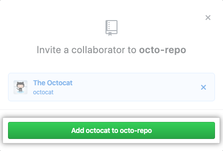

Team Integration -> Direito na raiz(main) do projeto
Antes de falarmos do fluxo de trabalho em equipe na branch principal. Uma vez configurados Git e Github, precisamos convidar outras pessoas para contribuir no nosso projeto. O passo a passo é bem simples.
- Basta acessar a página do seu repositório no github;
- Clicar em Settings (Preferências);
- Depois em Manage Access (gerenciar acesso);
- Agora é só clicar no botão "Add people" (Adicionar pessoas);
- E inserir os usernames de cada colaborador no projeto;

Após as etapas acima, cada um receberá um e-mail para aceitar o convite e já estará pronto para clonar o repositório e começar a trabalhar no código do projeto.
Aqui entramos na parte importante desse tópico.
Como trabalhar em equipe direto na branch main.
Vale lembrar que essa prática pode acontecer em projetos pequenos, em fase inicial ou ambiente de aprendizado, mas o mais recomendável é trabalhar em outras branches e só depois que as alterações forem validadas e testadas devem seguirar para a branch principal do projeto.
Bom, dada a dica, vamos continuar com o fluxo de trabalho na main.
O passo a passo é o seguinte:
- Trabalhamos no projeto, fazemos as alterações necessárias;
- Damos um git add com o nome dos arquivos que quer adicionar para a staging area;
- Em seguida fazemos um commit com o comando git commit -m "mesagem";
- E pronto, o commit foi adicionado ao histórico e já podemos sincronizar nosso repositório local com o repositório remoto;
Mas pensando que estamos trabalhando em equipe, o que pode ter acontecido nesse meio tempo?
Sim, outra pessoa pode ter feito alterações e o repositório remoto pode estar diferente do repositório local.
Vale lembrar que essa prática pode acontecer em projetos pequenos, em fase inicial ou ambiente de aprendizado, mas o mais recomendável é trabalhar em outras branches e só depois que as alterações forem validadas e testadas devem seguirar para a branch principal do projeto.
Tudo bem, molezinha, mas e se a outra pessoa também alterou a mesma parte do código?
Aí quando tentarmos fazer o git pull (fetch + merge) isso irá gerar o famoso conflito, já ouvimos tanto quando o tema é git e github. Mas não precisamos surtar, quando acontece um conflito o git irá nos perguntar qual alteração ele deve considerar, a que estava no repositório remoto ou a alteração que fizemos localmente. Aí basta entrar no arquivo em questão e editar deixando a versão final, com o conflito corrigido.
Certo, conflito solucionado, o resto a gente já sabe.
- git add [arquivo]
- git commit -m "solucionando conflito no arquivo x"
- git push
Pronto, repositório local sincronizado com o remoto no Github.